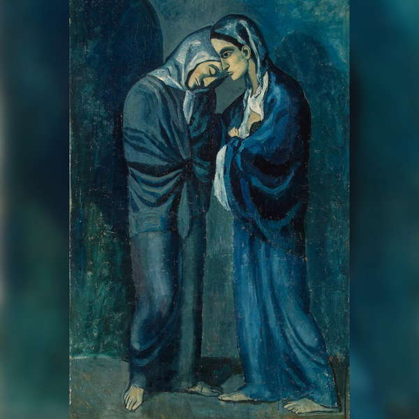
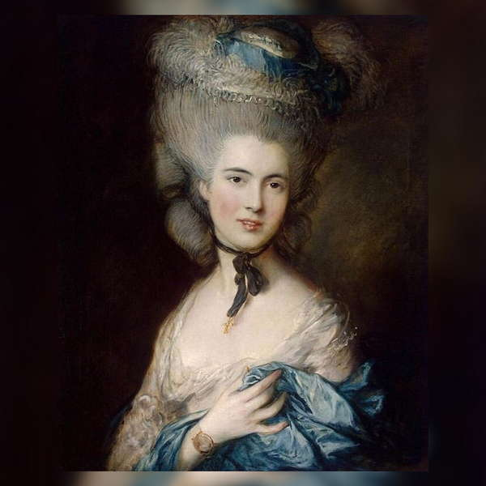
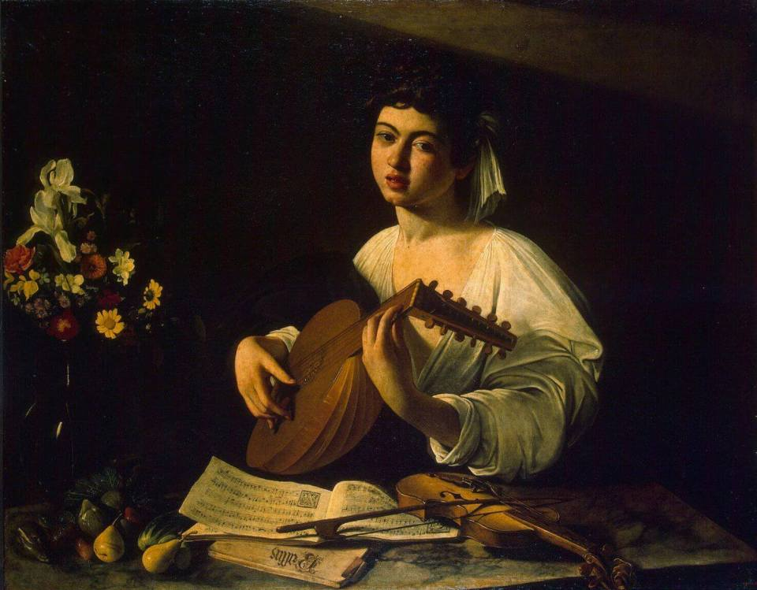

г.Санкт-Петербург, Дворцовая набережная, 34
Государственный Эрмитаж
Более 250 лет назад Екатерина II в Малом Эрмитаже пожелала иметь уголок
для уединения. Годом создания музея считается 1764 г., когда разорившийся немецкий купец был вынужден погасить
свой долг. Не имея наличных средств, он расплатился коллекцией из 225 полотен знаменитых художников. Эти картины
украсили стены Малого Эрмитажа. До 1852 года, когда экспозиции были открыты для широкой публики, посмотреть на
произведения искусств могли только «сливки» аристократического общества. Сегодня коллекция Эрмитажа включает
в себя более 3 млн. экспонатов, которые представлены полотнами, скульптурами, предметами декоративно-прикладного
искусства и другими памятниками культуры. Некоторых из них относятся к каменному веку.


